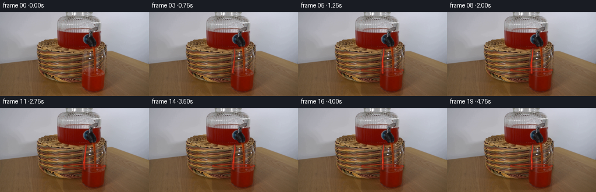
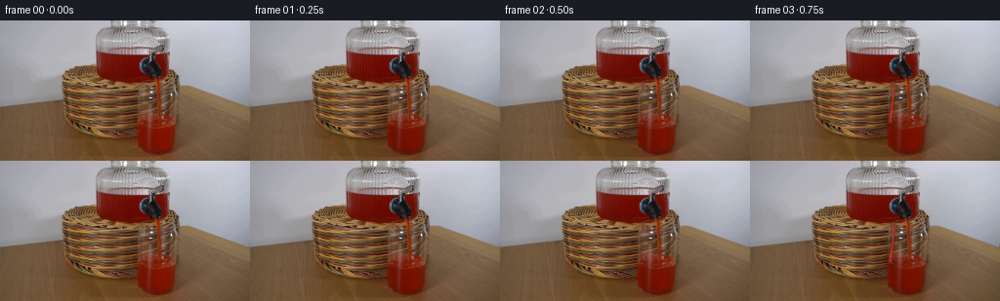

CODING AGENTS AS PIXEL WORLD MODELS
traex/DeepSeek-V4.1-Flash · 0064
点击播放 · 原生 RGB 像素
逐轮保存的候选
回放视频、检查图与代码变化。
每份候选均可单独播放。实际图片检查记录在下方工具轨迹中。
候选 01播放与检查图
点击播放 · 原生 RGB 像素

展开代码变化
--- 上一保存版本
+++ 本次保存版本
@@ -0,0 +1,303 @@
+from pathlib import Path
+
+import cv2
+import numpy as np
+from PIL import Image
+
+import artifact_io
+
+
+W, H, N, FPS = 256, 144, 20, 4
+SS = 4
+
+
+def smoothstep(x):
+ x = np.clip(x, 0.0, 1.0)
+ return x * x * (3.0 - 2.0 * x)
+
+
+def canvas():
+ return np.zeros((H * SS, W * SS, 3), dtype=np.float32)
+
+
+def alpha_canvas():
+ return np.zeros((H * SS, W * SS), dtype=np.float32)
+
+
+def scaled_point(point):
+ return tuple(int(round(v * SS)) for v in point)
+
+
+def composite(base, color, alpha):
+ alpha = np.clip(alpha, 0.0, 1.0)[..., None]
+ return base * (1.0 - alpha) + color * alpha
+
+
+def finish(layer):
+ return cv2.resize(layer, (W, H), interpolation=cv2.INTER_AREA)
+
+
+def stream_center(t, phase):
+ # The small lateral waver keeps the falling liquid from looking like a
+ # rigid graphic while retaining a stable, believable pour.
+ x = (
+ 147.0
+ - 2.2 * t
+ + 0.70 * np.sin(5.6 * t - phase)
+ + 0.20 * np.sin(13.0 * t + phase * 1.6)
+ )
+ y = 63.0 + (104.0 - 63.0) * t
+ return x, y
+
+
+def render_stream(phase, strength):
+ color_layer = canvas()
+ alpha = alpha_canvas()
+ if strength <= 0.0:
+ return color_layer, alpha
+
+ ts = np.linspace(0.0, 1.0, 150)
+ pts = [stream_center(t, phase) for t in ts]
+
+ # A soft dark-red halo models light scattering through the moving liquid.
+ halo_mask = alpha_canvas()
+ for i, (x, y) in enumerate(pts):
+ t = ts[i]
+ width = (1.35 + 1.45 * t + 0.10 * np.sin(10.0 * t - phase)) * SS
+ cv2.circle(halo_mask, scaled_point((x, y)), int(round(width * 1.75)),
+ strength * 0.34, -1, cv2.LINE_AA)
+ halo_mask = cv2.GaussianBlur(halo_mask, (0, 0), 1.25 * SS)
+ halo = np.empty_like(color_layer)
+ halo[:] = np.array([112.0, 11.0, 3.0], dtype=np.float32)
+ alpha = np.maximum(alpha, halo_mask)
+ color_layer = composite(color_layer, halo, halo_mask)
+
+ # Opaque red core.
+ core_mask = alpha_canvas()
+ for i, (x, y) in enumerate(pts):
+ t = ts[i]
+ width = (0.95 + 1.02 * t + 0.07 * np.sin(9.5 * t - phase)) * SS
+ cv2.circle(core_mask, scaled_point((x, y)), max(1, int(round(width))),
+ strength, -1, cv2.LINE_AA)
+ core_mask = cv2.GaussianBlur(core_mask, (0, 0), 0.42 * SS)
+ core = np.empty_like(color_layer)
+ core[:] = np.array([194.0, 29.0, 10.0], dtype=np.float32)
+ color_layer = composite(color_layer, core, core_mask)
+ alpha = np.maximum(alpha, core_mask)
+
+ # Narrow specular edge and a warm transmitted-light core.
+ highlight_mask = alpha_canvas()
+ for i, (x, y) in enumerate(pts):
+ t = ts[i]
+ hx = x - 0.42 - 0.12 * t
+ width = (0.25 + 0.18 * t) * SS
+ cv2.circle(highlight_mask, scaled_point((hx, y)), max(1, int(round(width))),
+ strength * 0.72, -1, cv2.LINE_AA)
+ highlight_mask = cv2.GaussianBlur(highlight_mask, (0, 0), 0.34 * SS)
+ highlight = np.empty_like(color_layer)
+ highlight[:] = np.array([255.0, 117.0, 78.0], dtype=np.float32)
+ color_layer = composite(color_layer, highlight, highlight_mask)
+
+ return color_layer, np.maximum(alpha, highlight_mask * 0.78)
+
+
+def render_glass_liquid(time_s, progress):
+ color_layer = canvas()
+ alpha = alpha_canvas()
+ if progress <= 0.0:
+ return color_layer, alpha
+
+ level = 106.0 - 5.6 * smoothstep(progress)
+ wave = 0.34 * np.sin(2.0 * np.pi * (0.52 * time_s) + 0.4)
+
+ # Interior of the clear glass, kept inset from its existing highlights.
+ glass = alpha_canvas()
+ polygon = np.array(
+ [
+ [108.0, level + 2.0],
+ [181.0, level + 1.0],
+ [180.0, 140.5],
+ [176.0, 143.5],
+ [111.0, 143.5],
+ [108.0, 139.0],
+ ],
+ dtype=np.float32,
+ )
+ cv2.fillPoly(glass, [np.rint(polygon * SS).astype(np.int32)], 1.0, cv2.LINE_AA)
+ glass = cv2.GaussianBlur(glass, (0, 0), 0.45 * SS)
+
+ # A restrained saturation increase reads as more liquid without replacing
+ # the original glass texture and reflections.
+ tint_alpha = glass * (0.075 + 0.085 * smoothstep(progress))
+ tint = np.empty_like(color_layer)
+ tint[:] = np.array([178.0, 22.0, 8.0], dtype=np.float32)
+ color_layer = composite(color_layer, tint, tint_alpha)
+ alpha = np.maximum(alpha, tint_alpha)
+
+ # Bright meniscus and its reflected underside.
+ for offset, width, opacity in [(-1.25, 1.55, 0.80), (1.25, 0.85, 0.42)]:
+ surf = alpha_canvas()
+ yy = level + offset + wave
+ cv2.ellipse(
+ surf,
+ scaled_point((145.0, yy)),
+ (int(36.5 * SS), int(3.1 * SS)),
+ 0,
+ 0,
+ 360,
+ opacity * smoothstep(progress),
+ int(max(1, width * SS)),
+ cv2.LINE_AA,
+ )
+ surf = cv2.GaussianBlur(surf, (0, 0), 0.48 * SS)
+ surface = np.empty_like(color_layer)
+ surface[:] = np.array([226.0, 53.0, 24.0], dtype=np.float32)
+ color_layer = composite(color_layer, surface, surf)
+ alpha = np.maximum(alpha, surf)
+
+ # Fine ripples move away from the impact point.
+ ripple = alpha_canvas()
+ for k in range(3):
+ radius = 3.0 + 6.0 * k + 2.5 * ((time_s * 0.72 + k * 0.19) % 1.0)
+ fade = (1.0 - ((time_s * 0.72 + k * 0.19) % 1.0)) * (0.22 - 0.045 * k)
+ cv2.ellipse(
+ ripple,
+ scaled_point((144.0, level + 0.8)),
+ (int(radius * SS), int(max(1.0, radius * 0.12) * SS)),
+ 0,
+ 0,
+ 360,
+ max(0.0, fade) * smoothstep(progress),
+ max(1, int(0.45 * SS)),
+ cv2.LINE_AA,
+ )
+ ripple = cv2.GaussianBlur(ripple, (0, 0), 0.55 * SS)
+ ripple_color = np.empty_like(color_layer)
+ ripple_color[:] = np.array([244.0, 91.0, 55.0], dtype=np.float32)
+ color_layer = composite(color_layer, ripple_color, ripple)
+ alpha = np.maximum(alpha, ripple)
+
+ return color_layer, alpha
+
+
+def render_splash(time_s, progress):
+ color_layer = canvas()
+ alpha = alpha_canvas()
+ if progress <= 0.0:
+ return color_layer, alpha
+
+ level = 106.0 - 5.6 * smoothstep(progress)
+ impact_x = stream_center(1.0, 2.0 * np.pi * 1.4 * time_s)[0]
+
+ # Small ballistic beads form a crown at the point of impact.
+ for j in range(7):
+ cycle = (time_s * 2.15 + j * 0.137) % 1.0
+ side = -1.0 if j % 2 == 0 else 1.0
+ speed = 4.0 + 1.6 * (j % 3)
+ x = impact_x + side * speed * cycle
+ y = level + 0.3 - (5.0 + 1.1 * (j % 2)) * cycle + 7.0 * cycle * cycle
+ radius = (0.55 + 0.16 * (j % 3)) * (1.0 - 0.45 * cycle)
+ if radius <= 0.1:
+ continue
+ bead = alpha_canvas()
+ cv2.circle(bead, scaled_point((x, y)), int(max(1, round(radius * SS))),
+ smoothstep(progress) * (1.0 - cycle) * 0.95, -1, cv2.LINE_AA)
+ bead = cv2.GaussianBlur(bead, (0, 0), 0.34 * SS)
+ bead_color = np.empty_like(color_layer)
+ if j % 3 == 0:
+ bead_color[:] = np.array([251.0, 121.0, 78.0], dtype=np.float32)
+ else:
+ bead_color[:] = np.array([204.0, 36.0, 14.0], dtype=np.float32)
+ color_layer = composite(color_layer, bead_color, bead)
+ alpha = np.maximum(alpha, bead)
+
+ # A compact white-red glint sells the liquid-glass contact.
+ glint = alpha_canvas()
+ pulse = 0.55 + 0.45 * np.sin(2.0 * np.pi * time_s * 1.3) ** 2
+ cv2.ellipse(
+ glint,
+ scaled_point((impact_x, level - 0.1)),
+ (int(2.7 * SS), int(0.75 * SS)),
+ 0,
+ 0,
+ 360,
+ 0.34 * pulse * smoothstep(progress),
+ max(1, int(0.50 * SS)),
+ cv2.LINE_AA,
+ )
+ glint = cv2.GaussianBlur(glint, (0, 0), 0.48 * SS)
+ glint_color = np.empty_like(color_layer)
+ glint_color[:] = np.array([255.0, 152.0, 112.0], dtype=np.float32)
+ color_layer = composite(color_layer, glint_color, glint)
+ alpha = np.maximum(alpha, glint)
+ return color_layer, alpha
+
+
+def render_droplet(time_s, emit_time, strength):
+ if time_s < emit_time or strength <= 0.0:
+ return None
+ dt = time_s - emit_time
+ x = 146.7 + 0.55 * np.sin(2.0 * np.pi * (dt * 1.2 + emit_time))
+ y = 65.0 + 0.5 * 160.0 * dt * dt
+ if y > 104.0:
+ return None
+ radius = 1.35 + 0.16 * dt
+ layer = alpha_canvas()
+ cv2.circle(layer, scaled_point((x, y)), int(round(radius * SS)),
+ strength, -1, cv2.LINE_AA)
+ layer = cv2.GaussianBlur(layer, (0, 0), 0.42 * SS)
+ color = np.empty((H * SS, W * SS, 3), dtype=np.float32)
+ color[:] = np.array([195.0, 29.0, 10.0], dtype=np.float32)
+ return color, layer
+
+
+def add_layer(frame, color_layer, alpha):
+ down_color = finish(color_layer)
+ down_alpha = np.clip(finish(alpha), 0.0, 1.0)[..., None]
+ return frame * (1.0 - down_alpha) + down_color * down_alpha
+
+
+def build_frames(first):
+ frames = []
+ base = first.astype(np.float32)
+ for frame_index in range(N):
+ if frame_index == 0:
+ frames.append(first.copy())
+ continue
+
+ time_s = frame_index / FPS
+ progress = smoothstep((frame_index - 0.75) / 6.0)
+ stream_strength = smoothstep((frame_index - 1.5) / 2.1)
+ phase = 2.0 * np.pi * 1.4 * time_s
+
+ frame = base.copy()
+
+ # One detached bead, then the continuous ribbon: a clear pour onset.
+ for emit_time, strength in [(0.24, 0.72), (0.38, 0.45)]:
+ droplet = render_droplet(time_s, emit_time, strength)
+ if droplet is not None:
+ frame = add_layer(frame, *droplet)
+
+ stream_color, stream_alpha = render_stream(phase, stream_strength)
+ frame = add_layer(frame, stream_color, stream_alpha)
+
+ liquid_color, liquid_alpha = render_glass_liquid(time_s, progress)
+ frame = add_layer(frame, liquid_color, liquid_alpha)
+
+ splash_color, splash_alpha = render_splash(time_s, progress)
+ frame = add_layer(frame, splash_color, splash_alpha)
+
+ frames.append(np.clip(np.rint(frame), 0, 255).astype(np.uint8))
+ return np.stack(frames, axis=0)
+
+
+def main():
+ case_dir = Path(__file__).resolve().parent
+ first = np.asarray(Image.open(case_dir / "first_frame.png").convert("RGB"), dtype=np.uint8)
+ assert first.shape == (H, W, 3)
+ frames = build_frames(first)
+ artifact_io.save(frames, case_dir)
+
+
+if __name__ == "__main__":
+ main()
候选 02播放与检查图
点击播放 · 原生 RGB 像素


展开代码变化
--- 上一保存版本
+++ 本次保存版本
@@ -37,7 +37,11 @@
return cv2.resize(layer, (W, H), interpolation=cv2.INTER_AREA)
-def stream_center(t, phase):
+def liquid_surface(progress):
+ return 141.5 - 37.5 * smoothstep(progress)
+
+
+def stream_center(t, phase, surface_y):
# The small lateral waver keeps the falling liquid from looking like a
# rigid graphic while retaining a stable, believable pour.
x = (
@@ -46,18 +50,22 @@
+ 0.70 * np.sin(5.6 * t - phase)
+ 0.20 * np.sin(13.0 * t + phase * 1.6)
)
- y = 63.0 + (104.0 - 63.0) * t
+ y = 64.0 + (surface_y + 0.7 - 64.0) * t
return x, y
-def render_stream(phase, strength):
+def render_stream(phase, strength, reach, surface_y):
color_layer = canvas()
alpha = alpha_canvas()
if strength <= 0.0:
return color_layer, alpha
ts = np.linspace(0.0, 1.0, 150)
- pts = [stream_center(t, phase) for t in ts]
+ visible = ts <= reach
+ ts = ts[visible]
+ pts = [stream_center(t, phase, surface_y) for t in ts]
+ if len(pts) < 2:
+ return color_layer, alpha
# A soft dark-red halo models light scattering through the moving liquid.
halo_mask = alpha_canvas()
@@ -107,7 +115,7 @@
if progress <= 0.0:
return color_layer, alpha
- level = 106.0 - 5.6 * smoothstep(progress)
+ level = liquid_surface(progress)
wave = 0.34 * np.sin(2.0 * np.pi * (0.52 * time_s) + 0.4)
# Interior of the clear glass, kept inset from its existing highlights.
@@ -186,8 +194,8 @@
if progress <= 0.0:
return color_layer, alpha
- level = 106.0 - 5.6 * smoothstep(progress)
- impact_x = stream_center(1.0, 2.0 * np.pi * 1.4 * time_s)[0]
+ level = liquid_surface(progress)
+ impact_x = stream_center(1.0, 2.0 * np.pi * 1.4 * time_s, level)[0]
# Small ballistic beads form a crown at the point of impact.
for j in range(7):
@@ -239,7 +247,7 @@
dt = time_s - emit_time
x = 146.7 + 0.55 * np.sin(2.0 * np.pi * (dt * 1.2 + emit_time))
y = 65.0 + 0.5 * 160.0 * dt * dt
- if y > 104.0:
+ if y > 141.0:
return None
radius = 1.35 + 0.16 * dt
layer = alpha_canvas()
@@ -267,18 +275,22 @@
time_s = frame_index / FPS
progress = smoothstep((frame_index - 0.75) / 6.0)
- stream_strength = smoothstep((frame_index - 1.5) / 2.1)
+ stream_strength = smoothstep((frame_index - 0.4) / 2.0)
+ stream_reach = smoothstep((time_s - 0.10) / 0.82)
+ surface_y = liquid_surface(progress)
phase = 2.0 * np.pi * 1.4 * time_s
frame = base.copy()
# One detached bead, then the continuous ribbon: a clear pour onset.
- for emit_time, strength in [(0.24, 0.72), (0.38, 0.45)]:
+ for emit_time, strength in [(0.19, 0.72), (0.31, 0.45)]:
droplet = render_droplet(time_s, emit_time, strength)
if droplet is not None:
frame = add_layer(frame, *droplet)
- stream_color, stream_alpha = render_stream(phase, stream_strength)
+ stream_color, stream_alpha = render_stream(
+ phase, stream_strength, stream_reach, surface_y
+ )
frame = add_layer(frame, stream_color, stream_alpha)
liquid_color, liquid_alpha = render_glass_liquid(time_s, progress)
候选 03播放与检查图
可观测工具轨迹
实际执行的命令与返回图片。
命令 1exit 0
/bin/bash -c "pwd && rg --files -g '"'!*__pycache__*'"'"
命令 2exit 0
/bin/bash -c "sed -n '1,240p' prompt.txt"
命令 3exit 0
/bin/bash -c "sed -n '1,280p' GENERATION_RULES.md"
命令 4exit 0
/bin/bash -c "sed -n '1,240p' artifact_io.py"
命令 5exit 0
/bin/bash -c "python - <<'PY'
from PIL import Image
import numpy as np
im=Image.open('first_frame.png')
a=np.array(im)
print(im.mode, im.size, a.shape, a.dtype)
print('min max mean', a.min(axis=(0,1)), a.max(axis=(0,1)), a.mean(axis=(0,1)))
# exact unique count and common colors
u,c=np.unique(a.reshape(-1,a.shape[-1]),axis=0,return_counts=True)
ix=np.argsort(c)[-25:][::-1]
for i in ix: print(tuple(u[i]), int(c[i]))
PY"命令 6exit 0
/bin/bash -c "python - <<'PY' mods=['cv2','numpy','PIL','scipy','imageio','matplotlib'] for m in mods: try: x=__import__(m); print(m, getattr(x,'__version__','ok')) except Exception as e: print(m,'MISSING',e) PY"
命令 7exit 0
/bin/bash -c "python - <<'PY'
import cv2, numpy as np
im=cv2.imread('first_frame.png')
g=cv2.cvtColor(im,cv2.COLOR_BGR2GRAY)
# 64x36 char luminance
for h,w in [(36,64),(48,96)]:
s=cv2.resize(g,(w,h),interpolation=cv2.INTER_AREA)
chars=' .:-=+*#%@'
print('\\nLUM',w,h)
for row in s:
print(''.join(chars[min(9,int(v)*10//256)] for v in row))
PY"命令 8exit 0
/bin/bash -c "python - <<'PY'
from PIL import Image
import numpy as np
im=np.array(Image.open('first_frame.png')).astype(np.int16)
r,g,b=im.transpose(2,0,1)
# red masks
for name,m in [
('brightred',(r>120)&(r>g*1.5)&(r>b*1.4)),
('red',(r>80)&(r>g*1.35)&(r>b*1.25)),
('dark',(r+g+b<180)),
('white',(r+g+b>690)),
('brown',(r>g*1.1)&(g>b*1.1)&(r<180)),
('clearblue',(b>r*1.05)&(g>r*1.03))]:
ys,xs=np.where(m)
print(name,len(xs),'bbox', (xs.min(),ys.min(),xs.max(),ys.max()) if len(xs) else None,'centroid',(xs.mean(),ys.mean()) if len(xs) else None)
# grid average rgb 8x16
for yy in range(0,144,18):
print('row',yy)
for xx in range(0,256,32):
c=im[yy:yy+18,xx:xx+32].mean((0,1)).astype(int)
print(f'{xx:3}:{tuple(c)}',end=' ')
print()
PY"命令 9exit 0
/bin/bash -c "python - <<'PY'
import cv2, numpy as np
im=cv2.imread('first_frame.png')[:,:,::-1]
r,g,b=im.astype(int).transpose(2,0,1)
conds={
'hi_red':(r>90)&(r>g*1.6)&(r>b*1.5),
'mid_red':(r>55)&(r>g*1.35)&(r>b*1.25)&(g<110),
'glassdark':(r<100)&(g<100)&(b<100),
'blue':(b>r+10)&(g>r+5)&(b>130),
'gray_bg':(abs(r-g)<8)&(abs(g-b)<15)&(r>140),
}
for name,m in conds.items():
n,lab,stats,cent=cv2.connectedComponentsWithStats(m.astype('uint8'),8)
print('\\n',name)
for i in np.argsort(stats[1:,4])[-12:][::-1]+1:
x,y,w,h,a=stats[i]; print(a,(x,y,w,h),tuple(np.round(cent[i],1)))
# 128x72 classify per 2x2 mean
for yy in range(0,144,4):
line=''
for xx in range(0,256,4):
c=im[yy:yy+4,xx:xx+4].mean((0,1)).astype(int); r0,g0,b0=c
if r0>85 and r0>g0*1.55 and r0>b0*1.4: ch='R'
elif r0>65 and r0>g0*1.3 and r0>b0*1.2 and g0<105: ch='r'
elif b0>r0+10 and b0>g0+2: ch='B'
elif abs(r0-g0)<8 and abs(g0-b0)<15 and r0>145: ch='.'
elif r0<95 and g0<95 and b0<95: ch='#'
elif r0>g0*1.1 and g0>b0*1.1: ch='w'
else: ch='-'
line+=ch
print(line)
PY"命令 10exit 0
/bin/bash -c "python - <<'PY'
import cv2, numpy as np
from sklearn.cluster import KMeans
im=cv2.imread('first_frame.png')[:,:,::-1]
# central crop x40:210 y15:144
c=im[15:144,40:210]
x=c.reshape(-1,3).astype(float)
km=KMeans(12,random_state=0,n_init=5).fit(x)
lab=km.labels_.reshape(c.shape[:2]); centers=km.cluster_centers_
for i,cen in sorted(enumerate(centers), key=lambda z: tuple(z[1])):
ys,xs=np.where(lab==i)
print(i, tuple(np.rint(cen).astype(int)), len(xs), 'bbox', (xs.min()+40,ys.min()+15,xs.max()+40,ys.max()+15), 'cent', (round(xs.mean()+40,1),round(ys.mean()+15,1)))
PY"命令 11exit 0
/bin/bash -c "python - <<'PY'
import cv2, numpy as np
im=cv2.imread('first_frame.png')
# edge and gray-level ascii 128x72 over center; show intensity every 2 pixels
g=cv2.cvtColor(im,cv2.COLOR_BGR2GRAY)
chars=' .:-=+*#%@'
# average 2x2
s=cv2.resize(g,(128,72),interpolation=cv2.INTER_AREA)
for yy,row in enumerate(s):
if yy<5: continue
print(f'{yy*2:03}', ''.join(chars[min(9,int(v)*10//256)] for v in row[15:115]))
PY"命令 12exit 0
/bin/bash -c "python - <<'PY'
import cv2, numpy as np
im=cv2.imread('first_frame.png')
# save enhanced contrast and edge outputs for numeric inspection
lab=cv2.cvtColor(im,cv2.COLOR_BGR2LAB); l,a,b=cv2.split(lab); l=cv2.createCLAHE(3,(8,8)).apply(l); enh=cv2.cvtColor(cv2.merge([l,a,b]),cv2.COLOR_LAB2BGR)
cv2.imwrite('.tmp/enhanced.png',enh)
cv2.imwrite('.tmp/edges.png',cv2.Canny(im,40,100))
# radial / color saliency around center
rgb=im[:,:,::-1].astype(np.float32)
r,g,b=rgb.transpose(2,0,1)
red=(r-(g+b)/2)
for th in [10,20,30,40,50,60,80]:
m=(red>th)&(r>70)
ys,xs=np.where(m)
print('th',th,'n',len(xs),'bbox',(xs.min(),ys.min(),xs.max(),ys.max()))
# print horizontal/vertical color samples central
for y in range(20,141,5):
vals=[]
for x in range(40,211,10): vals.append(tuple(rgb[y,x].astype(int)))
print(y,vals)
PY"命令 13exit 0
/bin/bash -c "python - <<'PY'
import cv2,numpy as np
im=cv2.imread('first_frame.png')[:,:,::-1]
# inspect exact masks for likely dispenser and glass
r,g,b=im.transpose(2,0,1).astype(int)
# save mask visualization
masks={}
masks['red']=((r>60)&(r>1.5*g)&(r>1.5*b)).astype(np.uint8)*255
masks['neutral']=((np.max(im,2)-np.min(im,2)<12)&(r>100)).astype(np.uint8)*255
masks['dark']=((r+g+b)<190).astype(np.uint8)*255
for k,m in masks.items(): cv2.imwrite(f'.tmp/{k}.png',m)
# region connected comp of background neutral objects by flood-ish segmentation
for name, cond in [
('red',(r>50)&(r>g*1.5)&(r>b*1.5)),
('neutral',(np.max(im,2)-np.min(im,2)<10)&(r>90)),
('black',(np.max(im,2)<75)),
]:
m=cond.astype(np.uint8)
n,l,st,ct=cv2.connectedComponentsWithStats(m,8)
print(name)
for i in np.argsort(st[1:,4])[-20:][::-1]+1:
x,y,w,h,a=st[i];print(a,(x,y,w,h),ct[i])
PY"命令 14exit 1
/bin/bash -c "python - <<'PY'
import cv2,numpy as np
im=cv2.imread('first_frame.png')[:,:,::-1]
r,g,b=im.transpose(2,0,1).astype(float)
# mask boundaries: background neutral brightness; objects contrast around center
# print row run intervals of red, dark, neutral-bright
for y in range(25,141,5):
vals=[]
m=(r[y]>55)&(r[y]>1.45*g[y])&(r[y]>1.45*b[y])
idx=np.where(m)[0]
if len(idx): vals.append('red '+','.join(f'{a}-{b}' for a,b in zip(idx[np.r_[True,np.diff(idx)>1]],idx[np.r_[np.diff(idx)>1,True]])))
m=((r[y]+g[y]+b[y])<180)
idx=np.where(m)[0]
if len(idx): vals.append('dark '+','.join(f'{a}-{b}' for a,b in zip(idx[np.r_[True,np.diff(idx)>1]],idx[np.r_[np.diff(idx)>1,True]])))
m=(abs(r[y]-g[y])<10)&(abs(g[y]-b[y])<14)&(r[y]>140)
idx=np.where(m)[0]
# only central broad runs
runs=[(a,b) for a,b in zip(idx[np.r_[True,np.diff(idx)>1]],idx[np.r_[np.diff(idx)>1,True]]) if b-a>5]
if runs: vals.append('gray '+','.join(f'{a}-{b}' for a,b in runs))
print(y,' | '.join(vals))
PY"命令 15exit 0
/bin/bash -c "python - <<'PY'
import cv2, numpy as np
im=cv2.imread('first_frame.png')
g=cv2.cvtColor(im,cv2.COLOR_BGR2GRAY)
e=cv2.Canny(im,25,70)
# downsample edge max
s=cv2.resize(e,(128,72),interpolation=cv2.INTER_AREA)
for yy,row in enumerate(s):
if yy<8: continue
print(f'{yy*2:03}', ''.join('#' if v>20 else ' ' for v in row[10:118]))
PY"命令 16exit 0
/bin/bash -c "python - <<'PY'
import cv2,numpy as np
im=cv2.imread('first_frame.png')[:,:,::-1]
# labels by nearest hand-picked cluster centers
centers=np.array([
[180,179,185], # bg gray
[155,155,158], # shadow gray
[110,85,60], # basket
[100,65,40], # basket dark
[110,15,2], # red dark
[135,50,25], # red light
[35,32,35], # black
[165,130,80], # basket highlight
[145,145,145], # glass gray
[190,195,205], # cool bg
[230,225,220], # white
])
chars='.:wbRr#@gC*'
for yy in range(0,144,2):
line=''
for xx in range(0,256,2):
c=im[yy:yy+2,xx:xx+2].mean((0,1))
i=np.argmin(((centers-c)**2).sum(1))
line+=chars[i]
print(line)
PY"命令 17exit 0
/bin/bash -c "python - <<'PY'
import cv2,numpy as np
im=cv2.imread('first_frame.png')[:,:,::-1]
r,g,b=im.transpose(2,0,1).astype(float)
def runs(mask,minlen=1):
idx=np.where(mask)[0]
if not len(idx): return []
return [(int(a),int(b)) for a,b in zip(idx[np.r_[True,np.diff(idx)>1]],idx[np.r_[np.diff(idx)>1,True]]) if b-a+1>=minlen]
for y in range(25,144,2):
red=(r[y]>50)&(r[y]>1.45*g[y])&(r[y]>1.45*b[y])
dark=(r[y]+g[y]+b[y]<190)
cool=(b[y]>r[y]+8)&(b[y]>125)
print(f'{y:3} R',runs(red,2),'D',runs(dark,2),'C',runs(cool,2))
PY"命令 18exit 0
/bin/bash -c "python - <<'PY'
import cv2,numpy as np
im=cv2.imread('first_frame.png')[:,:,::-1]
# save crops enlarged nearest and bilinear
for name,(x0,y0,x1,y1) in {'disp':(55,22,195,85),'vessel':(55,85,200,144),'center':(70,25,190,144)}.items():
c=im[y0:y1,x0:x1]
cv2.imwrite(f'.tmp/{name}_nearest.png',cv2.cvtColor(cv2.resize(c,None,fx=4,fy=4,interpolation=cv2.INTER_NEAREST),cv2.COLOR_RGB2BGR))
cv2.imwrite(f'.tmp/{name}_smooth.png',cv2.cvtColor(cv2.resize(c,None,fx=4,fy=4,interpolation=cv2.INTER_CUBIC),cv2.COLOR_RGB2BGR))
# print 2x2 mean colors for dispenser and vessel as rough block map compact ranges
for y0,y1 in [(30,70),(70,100),(100,140)]:
print('\\n',y0,y1)
for y in range(y0,y1,4):
vals=[]
for x in range(60,190,10):
c=im[y:y+4,x:x+10].mean((0,1)).astype(int)
vals.append('%02x%02x%02x'%tuple(c))
print(f'{y:03}', ' '.join(vals))
PY"命令 19exit 0
/bin/bash -c "python - <<'PY'
import cv2,numpy as np
im=cv2.imread('first_frame.png')[:,:,::-1]
# For selected x columns print color every 2 rows y 25..144
for x in [64,70,76,82,88,94,100,106,112,118,124,130,136,142,148,154,160,166,172,178,184,190]:
vals=[]
for y in range(26,144,4):
c=im[y,x]; vals.append('%02x%02x%02x'%tuple(c))
print(f'x{x:03}', ' '.join(vals))
PY"命令 20exit 0
/bin/bash -c "python - <<'PY'
import cv2,numpy as np
im=cv2.imread('first_frame.png')[:,:,::-1]
r,g,b=im.transpose(2,0,1).astype(float)
def runs(mask,minlen=1):
idx=np.where(mask)[0]
if not len(idx): return []
return [(int(a),int(b)) for a,b in zip(idx[np.r_[True,np.diff(idx)>1]],idx[np.r_[np.diff(idx)>1,True]]) if b-a+1>=minlen]
for y in range(28,70):
red=(r[y]>45)&(r[y]>1.35*g[y])&(r[y]>1.35*b[y])
dark=(r[y]+g[y]+b[y]<200)
nonbg=(abs(r[y]-g[y])>12)|(abs(g[y]-b[y])>16)|(r[y]<130)
print(f'{y:3} R{runs(red,1)} D{runs(dark,1)} N{runs(nonbg,2)}')
PY"命令 21exit 1
/bin/bash -c "python - <<'PY'
import cv2,numpy as np
im=cv2.imread('first_frame.png')[:,:,::-1].astype(np.float32)
r,g,b=im.transpose(2,0,1)
# red dominance, saturation
red=np.clip(r-(g+b)*.5,0,255)
mx=im.max(2); mn=im.min(2); sat=(mx-mn)/(mx+1e-6)
# local texture via laplacian abs smoothed
gray=cv2.cvtColor(im.astype(np.uint8),cv2.COLOR_RGB2GRAY).astype(float)
tex=cv2.GaussianBlur(np.abs(cv2.Laplacian(gray,cv2.CV_32F)),(0,0),2)
for y in range(90,144,3):
print(f'{y:3}',end=' ')
for x in range(80,200,4):
# sample mean 4x3
v=red[y:y+3,x:x+4].mean(); s=sat[y:y+3,x:x+4].mean(); t=tex[y:y+3,x:x+4].mean()
# R high, sat high, texture low => liquid
if v>45 and s>.55 and t<18: ch='@'
elif v>40 and s>.5: ch='O'
elif v>30 and s>.4: ch='o'
elif v>18 and s>.3: ch='.'
elif t>20: ch='#'
else: ch=' '
print(ch,end='')
print()
# clusters by color/stat
print('texture stats',tex.min(),tex.max(),np.percentile(tex,[10,50,90]))
PY"命令 22exit 0
/bin/bash -c "python - <<'PY'
import cv2,numpy as np
im=cv2.imread('first_frame.png')[:,:,::-1].astype(np.float32)
r,g,b=im.transpose(2,0,1)
red=np.clip(r-(g+b)*.5,0,255)
mx=im.max(2); mn=im.min(2); sat=(mx-mn)/(mx+1e-6)
gray=cv2.cvtColor(im.astype(np.uint8),cv2.COLOR_RGB2GRAY).astype(np.float32)
tex=cv2.GaussianBlur(np.abs(cv2.Laplacian(gray,cv2.CV_32F)),(0,0),2)
for y in range(90,144,3):
print(f'{y:3}',end=' ')
for x in range(80,200,4):
v=red[y:y+3,x:x+4].mean(); s=sat[y:y+3,x:x+4].mean(); t=tex[y:y+3,x:x+4].mean()
if v>45 and s>.55 and t<18: ch='@'
elif v>40 and s>.5: ch='O'
elif v>30 and s>.4: ch='o'
elif v>18 and s>.3: ch='.'
elif t>20: ch='#'
else: ch=' '
print(ch,end='')
print()
print('texture stats',tex.min(),tex.max(),np.percentile(tex,[10,50,90]))
PY"命令 23exit 0
/bin/bash -c "python - <<'PY'
import cv2,numpy as np
im=cv2.imread('first_frame.png')[:,:,::-1].astype(np.float32)
r,g,b=im.transpose(2,0,1)
# sample candidate region liquid color and basket texture stats
for name,(x0,y0,x1,y1) in {'liqtop':(108,74,170,95),'liqbot':(112,105,170,135),'basketL':(70,100,100,138),'basketR':(182,100,210,138),'bg':(0,0,50,30)}.items():
c=im[y0:y1,x0:x1].reshape(-1,3)
print(name,'mean',c.mean(0),'median',np.median(c,0),'std',c.std(0),'q10',np.percentile(c,10,0),'q90',np.percentile(c,90,0))
# silhouette row extents where red/basket object extends beyond background
# derive background per row from leftmost 40 median then compare
for y in range(28,144,4):
bg=np.median(im[max(0,y-1):y+2,:35],axis=(0,1))
d=np.linalg.norm(im[y]-bg,axis=1)
idx=np.where(d>22)[0]
if len(idx): print(y,bg.astype(int),idx.min(),idx.max())
PY"命令 24exit 0
/bin/bash -c "python - <<'PY'
import cv2,numpy as np
im=cv2.imread('first_frame.png')[:,:,::-1].astype(np.float32)
r,g,b=im.transpose(2,0,1)
# fine class map center x55:195 y25:144, 1 pixel per char but 2 cols per char via max features
def cls(c):
r,g,b=c
mx=max(c);mn=min(c); sat=(mx-mn)/(mx+1e-6)
if r>45 and r>g*1.38 and r>b*1.38: return 'R'
if r+g+b<175: return '#'
if r>g*1.12 and g>b*1.08 and r<165: return 'w'
if b>r+7 and b>g+1: return 'B'
if mx-mn<11 and r>120: return '.'
if mx-mn<20 and r>85: return ':'
if mx>165: return '*'
return '-'
for y in range(25,144,2):
line=''
for x in range(55,195,2):
# choose max red among 2x2; otherwise average
blk=im[y:y+2,x:x+2].reshape(-1,3)
if any((c[0]>45 and c[0]>c[1]*1.38 and c[0]>c[2]*1.38) for c in blk): ch='R'
else: ch=cls(blk.mean(0))
line+=ch
print(f'{y:03} {line}')
PY"命令 25exit 0
/bin/bash -c "python - <<'PY'
import cv2,numpy as np
im=cv2.imread('first_frame.png')[:,:,::-1]
# print colors in exact grid x=90..190 step5 y=30..75 step2 compact by rows
for y in range(28,76,2):
print(f'{y:02}',end=' ')
for x in range(90,191,5):
c=im[y,x]; print('%02x%02x%02x'%tuple(c),end=' ')
print()
PY"命令 26exit 0
/bin/bash -c "python - <<'PY'
import cv2,numpy as np
im=cv2.imread('first_frame.png')[:,:,::-1].astype(np.float32)
# background model median vertical per x from y0:25? use all bg neutral pixels; then foreground saliency
bg=np.median(im[:25],axis=0) # per x color
# for each row, use pixels with low chroma and brightness>120 as bg; smooth object mask from deviation from row median left side
obj=np.zeros((144,256),np.uint8)
for y in range(20,144):
bgc=np.median(im[y,0:35],axis=0)
d=np.linalg.norm(im[y]-bgc,axis=1)
obj[y]=d>24
# connected largest component after morphology
obj=cv2.morphologyEx(obj,cv2.MORPH_CLOSE,np.ones((5,5),np.uint8))
n,l,st,ct=cv2.connectedComponentsWithStats(obj,8)
for i in np.argsort(st[1:,4])[-10:][::-1]+1:print(st[i])
# print row extents of largest comps
for i in np.argsort(st[1:,4])[-3:][::-1]+1:
m=l==i
print('comp',i)
for y in range(20,144,4):
xs=np.where(m[y])[0]
if len(xs): print(y,xs.min(),xs.max(),len(xs))
PY"命令 27exit 0
/bin/bash -c "python - <<'PY'
import cv2,numpy as np
im=cv2.imread('first_frame.png')[:,:,::-1]
# edges central, 1 char per 2x2 with edge strength
g=cv2.cvtColor(im,cv2.COLOR_RGB2GRAY)
gx=cv2.Sobel(g,cv2.CV_32F,1,0,ksize=3); gy=cv2.Sobel(g,cv2.CV_32F,0,1,ksize=3); mag=np.hypot(gx,gy)
# threshold relative, show rows y20-144 x40-220 at 2x2
chars=' .:-=+*#%@'
for y in range(20,144,2):
line=''
for x in range(40,220,2):
v=np.percentile(mag[y:y+2,x:x+2],90)
line+=chars[min(9,int(v)//40)]
print(f'{y:03} {line}')
PY"命令 28exit 1
/bin/bash -c "python - <<'PY'
import cv2,numpy as np
im=cv2.imread('first_frame.png')[:,:,::-1]
# Print 1px class map central every pixel grouped 2px x. Class by hue, brightness, neutral.
def cl(c):
r,g,b=map(int,c); mx=max(c);mn=min(c); sat=(mx-mn)/(mx+1e-6)
if r>45 and r>g*1.4 and r>b*1.4: return 'R'
if mx<85: return '#'
if sat<0.10 and mx>125: return '.'
if sat<0.18 and mx>80: return ':'
if r>g*1.15 and g>b*1.08: return 'w'
if b>r+8: return 'B'
return '-'
for y in range(24,145,2):
line=''
for x in range(50,205,2):
blk=im[y:y+2,x:x+2].reshape(-1,3)
# choose R if any strong red
if np.any((blk[:,0]>45)&(blk[:,0]>blk[:,1]*1.4)&(blk[:,0]>blk[:,2]*1.4)): ch='R'
elif np.any(np.max(blk,1)<85): ch='#'
else: ch=cl(blk.mean(0))
line+=ch
print(f'{y:03} {line}')
PY"命令 29exit 0
/bin/bash -c "python - <<'PY'
import cv2,numpy as np
im=cv2.imread('first_frame.png')[:,:,::-1].astype(np.float32)
# Print color deviations from left background, 4x4 cells center. classify primary hue/brightness
for y in range(20,144,4):
print(f'{y:03}',end=' ')
for x in range(40,220,4):
c=im[y:y+4,x:x+4].mean((0,1)); bg=im[y:y+4,0:32].mean((0,1))
d=c-bg
if np.linalg.norm(d)<10: ch='.'
elif c[0]>c[1]*1.45 and c[0]>c[2]*1.45 and c[0]>50: ch='R'
elif max(c)<75: ch='#'
elif c[0]>c[1]*1.1 and c[1]>c[2]*1.1: ch='w'
elif c[2]>c[0]+6: ch='B'
elif c[0]>c[1]*1.03: ch='r'
else: ch=':'
print(ch,end='')
print()
PY"命令 30exit 0
/bin/bash -c 'python generate.py'
命令 31exit 0
/bin/bash -c "python - <<'PY'
import numpy as np
from PIL import Image
from pathlib import Path
p=Path('.')
first=np.array(Image.open('first_frame.png').convert('RGB'))
frames=np.array([np.array(Image.open(f'frames/{i:02d}.png')) for i in range(20)])
print('shape/dtype',frames.shape,frames.dtype)
print('frame0 identical',np.array_equal(first,frames[0]),'maxdiff',np.abs(first.astype(int)-frames[0].astype(int)).max())
for i in range(1,20):
d=np.abs(frames[i].astype(int)-first.astype(int))
print(i,'changed',np.any(d>0,axis=2).sum(),'mean',d.mean(),'max',d.max(),'changed_bbox', end=' ')
ys,xs=np.where(np.any(d>0,axis=2)); print((xs.min(),ys.min(),xs.max(),ys.max()) if len(xs) else None)
print('sheet',Image.open('inspection.png').size)
PY"命令 32exit 0
/bin/bash -c "python - <<'PY'
import cv2,numpy as np
im=cv2.imread('first_frame.png')[:,:,::-1].astype(np.float32)
g=cv2.cvtColor(im.astype(np.uint8),cv2.COLOR_RGB2GRAY).astype(np.float32)
# local detail at two scales
lap=np.abs(cv2.Laplacian(g,cv2.CV_32F))
tex=cv2.GaussianBlur(lap,(0,0),1.2)
# color metrics
r,gc,b=im.transpose(2,0,1)
red=r-(gc+b)/2
sat=(im.max(2)-im.min(2))/(im.max(2)+1e-4)
# map lower 80..143 x50..205 4x3 cells, categorize texture and redness
for y in range(80,144,3):
print(f'{y:03}',end=' ')
for x in range(50,206,3):
rr=np.mean(red[y:y+3,x:x+3]); ss=np.mean(sat[y:y+3,x:x+3]); tt=np.mean(tex[y:y+3,x:x+3]); bb=np.mean(im[y:y+3,x:x+3])
if rr>55 and ss>.58 and tt<11: ch='@'
elif rr>42 and ss>.5 and tt<16: ch='O'
elif rr>30 and ss>.43 and tt<22: ch='o'
elif tt>25: ch='#'
elif tt>14: ch='='
elif tt>8: ch='-'
elif rr>25: ch='.'
else: ch=' '
print(ch,end='')
print()
PY"命令 33exit 0
/bin/bash -c "python - <<'PY'
from PIL import Image
import numpy as np
frames=[np.array(Image.open(f'frames/{i:02d}.png')) for i in [1,3,6,10,15,19]]
# create 2x3 at 4x, plus overlay diff color maybe
out=Image.new('RGB',(256*3,144*2))
for k,a in enumerate(frames):out.paste(Image.fromarray(a),(256*(k%3),144*(k//3)))
out.resize((1536,576),Image.Resampling.NEAREST).save('.tmp/candidates.png')
# central crop montage
out2=Image.new('RGB',(140*3,90*2))
for k,a in enumerate(frames):out2.paste(Image.fromarray(a[20:110,70:210]),(140*(k%3),90*(k//3)))
out2.resize((1260,540),Image.Resampling.NEAREST).save('.tmp/candidates_center.png')
PY"命令 34exit 0
/bin/bash -c "python - <<'PY'
import numpy as np
from PIL import Image
for i in [1,3,6,10,15,19]:
a=np.array(Image.open(f'frames/{i:02d}.png'))
print('\\nFRAME',i)
# Print central region with color labels every 2x2 x 70:195 y55:144
for y in range(55,144,2):
line=''
for x in range(70,195,2):
c=a[y:y+2,x:x+2].mean((0,1)).astype(int);r,g,b=c
if r>50 and r>g*1.45 and r>b*1.45: ch='R'
elif r+g+b<170: ch='#'
elif max(c)<85: ch='#'
elif abs(r-g)<10 and abs(g-b)<14 and r>120: ch='.'
elif r>g*1.1 and g>b*1.08: ch='w'
elif b>r+7: ch='B'
else: ch='-'
line+=ch
print(f'{y:03} {line}')
PY"命令 35exit 0
/bin/bash -c "python generate.py && python - <<'PY'
import numpy as np
from PIL import Image
first=np.array(Image.open('first_frame.png').convert('RGB'))
frames=np.array([np.array(Image.open(f'frames/{i:02d}.png')) for i in range(20)])
print('frame0',np.array_equal(first,frames[0]))
for i in range(1,20):
d=np.any(frames[i]"'!=first,2)
ys,xs=np.where(d)
print(i,d.sum(),(xs.min(),ys.min(),xs.max(),ys.max()),'"'mean',np.abs(frames[i].astype(int)-first.astype(int)).mean())
PY"命令 36exit 0
/bin/bash -c "python - <<'PY'
from PIL import Image,ImageDraw
import numpy as np
idx=[1,2,4,6,10,15,19,0]
sheet=Image.new('RGB',(256*4, (144+20)*2),(25,28,35)); d=ImageDraw.Draw(sheet)
for k,i in enumerate(idx):
a=Image.open(f'frames/{i:02d}.png')
x=(k%4)*256;y=(k//4)*164
d.text((x+4,y+3),f'{i:02d} {i/4:.2f}s',fill='white');sheet.paste(a,(x,y+20))
sheet.save('.tmp/current_sheet.png')
PY"命令 37exit 0
/bin/bash -c "python - <<'PY'
import numpy as np
from PIL import Image
first=np.array(Image.open('first_frame.png'))
for i in [1,2,3,4,5,6,10,15,19]:
a=np.array(Image.open(f'frames/{i:02d}.png')); d=np.abs(a.astype(int)-first.astype(int)).max(2)
# count changed per y and x, print aggregate bbox center
print('\\n',i,'rows changed',[(y,int((d[y]>0).sum())) for y in range(55,144,4) if (d[y]>0).sum()])
print('cols',[(x,int((d[:,x]>0).sum())) for x in range(100,190,5) if (d[:,x]>0).sum()])
PY"命令 38exit 0
/bin/bash -c "python - <<'PY'
import numpy as np
from PIL import Image
first=np.array(Image.open('first_frame.png'))
for i in [2,3,4,5,6,10,19]:
a=np.array(Image.open(f'frames/{i:02d}.png'))
print('\\nFRAME',i)
for y in range(55,144,3):
line=''
for x in range(100,190,2):
d=a[y:y+3,x:x+2].astype(float).mean((0,1))-first[y:y+3,x:x+2].astype(float).mean((0,1))
if np.linalg.norm(d)<2: ch=' '
elif d[0]>15 and d[0]>d[1]*1.2: ch='R'
elif d[0]>7 and d[1]<d[0]*.8: ch='r'
elif d[0]>0: ch='+'
elif d[0]<-10: ch='B'
else: ch='-'
line+=ch
print(f'{y:03} {line}')
PY"命令 39exit 0
/bin/bash -c "python - <<'PY'
import numpy as np
from PIL import Image
first=np.array(Image.open('first_frame.png')).astype(float)
for i in [4,6,10,19]:
a=np.array(Image.open(f'frames/{i:02d}.png')).astype(float)
print('\\nframe',i)
# exact sample colors at points around liquid, x110,130,150,170 and y 100,110,120,130,140
for y in [95,100,105,110,115,120,125,130,135,140,143]:
print(y,[tuple(np.rint(a[y,x]).astype(int)) for x in [105,110,120,130,140,150,160,170,180,185]])
PY"命令 40exit 0
/bin/bash -c "python - <<'PY'
from PIL import Image
import numpy as np
# create a crop with 8x nearest only final and initial side by side
A=Image.open('frames/00.png'); B=Image.open('frames/19.png')
x0,y0,x1,y1=60,25,200,144
crop=Image.new('RGB',((x1-x0)*2,(y1-y0)))
crop.paste(A.crop((x0,y0,x1,y1)),(0,0));crop.paste(B.crop((x0,y0,x1,y1)),((x1-x0),0))
crop.resize((1120,952),Image.Resampling.NEAREST).save('.tmp/before_after_8x.png')
PY"命令 41exit 0
/bin/bash -c "python - <<'PY'
import numpy as np
from PIL import Image
a=np.array(Image.open('first_frame.png')).astype(float)
# Determine object edge from deviation to row left bg, exclude right blue bg
for y in range(55,144,2):
bg=np.median(a[y,0:35],0)
d=np.linalg.norm(a[y]-bg,axis=1)
# print contiguous mask threshold 20
m=d>20
idx=np.where(m)[0]
runs=[]
if len(idx):runs=[(int(s),int(e)) for s,e in zip(idx[np.r_[True,np.diff(idx)>1]],idx[np.r_[np.diff(idx)>1,True]])]
print(y,[r for r in runs if r[0]<220 and r[1]>40])
PY"命令 42exit 0
/bin/bash -c "python - <<'PY'
import numpy as np
from PIL import Image
first=np.array(Image.open('first_frame.png')).astype(float)
# Check exact diff coordinates at each frame near stream to find expected source opening and glass top
for i in [2,4,6,10,19]:
a=np.array(Image.open(f'frames/{i:02d}.png')).astype(float)
d=np.abs(a-first).max(2)
print('\\nframe',i)
# each row min/max of meaningful diff
for y in range(55,144,4):
xs=np.where(d[y]>1)[0]
if len(xs): print(y, int(xs.min()), int(xs.max()), int(len(xs)))
PY"保存候选 3 份；完成命令 42 次；可验证图片返回 0 张。原始 API 响应与完整日志保留在本地。